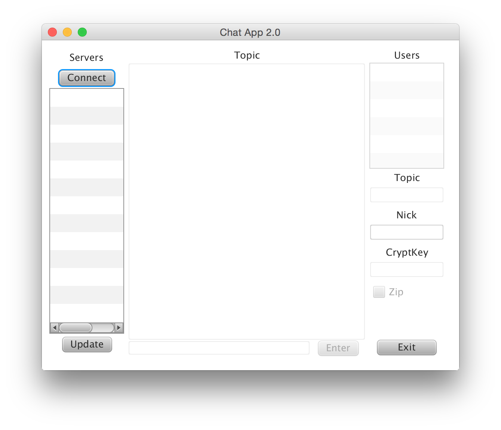

Chat-Server-and-Client
A chat server and client made in Java
This was a school project by me and Mattias Edin for the course Data Communication and Datanet, taken at Umeå University of Sweden.
We developed a chat system, both width server and client, where the client have a graphical user interface. You can see the report, though sadly in swedish, in doirapport.pdf.
Server
We developed our own pakages and sent them over TCP protocol, we used threads to keep up with multiple users.
Client
Also implemented the TCP protocol and made it posible to set and change nickname and topic of a server.
